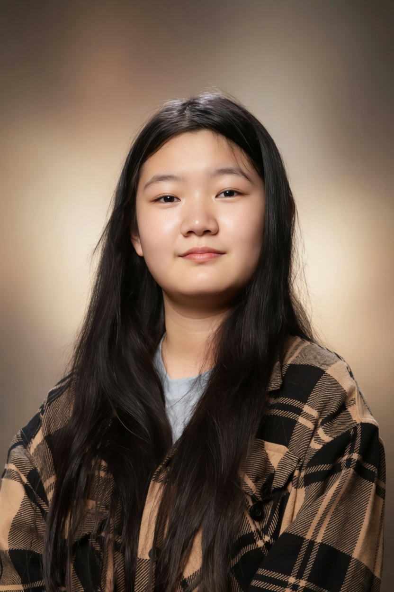

Claire Zhang
A guzheng student preparing for undergraduate study in art, design, and creative technology.
Claire has studied guzheng for nine years. Canada YC Music Academy has announced her solo graduation guzheng recital for October 25, 2026, and identifies Chen Wenying as her teacher.
Her intended areas of university study include visual art and design, interactive media, and creative technology.
View a concise profile
Nine years
with guzheng.
The upcoming recital is the central musical event presented on this site. The published programme lists 雨莲花开、云之南、茉莉芬芳、黔中赋.
The date, venue, programme, teacher and duration of study are drawn from the Academy’s public announcement.
Music & programmeRead the Academy’s announcement
A direction
for what comes next.
Claire’s application interests span studio art and design alongside programmes that bring art and technology together. Visual expression, interaction, and sound provide a way to introduce that range.
Explore these interestsAbout
this website.
The portrait comes from Claire’s original website. The recital poster and musical details come from Canada YC Music Academy. Study interests reflect the application direction provided by Claire’s family.
Site design, code, and editorial copy were produced with OpenAI Codex and generative AI assistance. The text is a third-person introduction, not a personal statement written by Claire.
The separately labelled website sound demo was made for this site. Its code, AI-generated backdrop, and third-party guzheng sample are not presented as Claire’s artwork, software project, or performance.